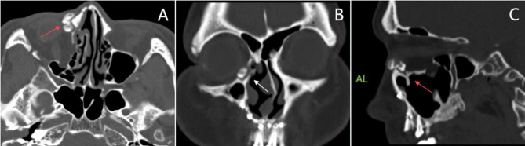
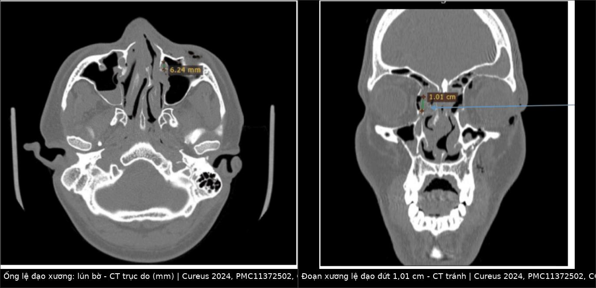
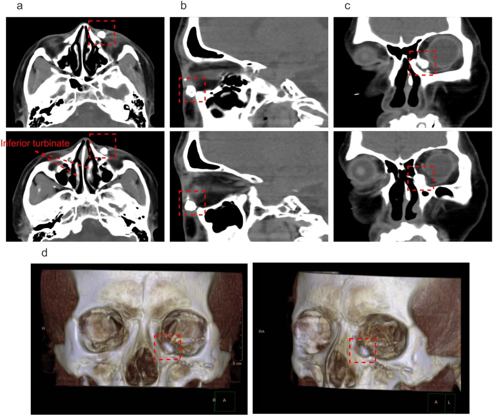
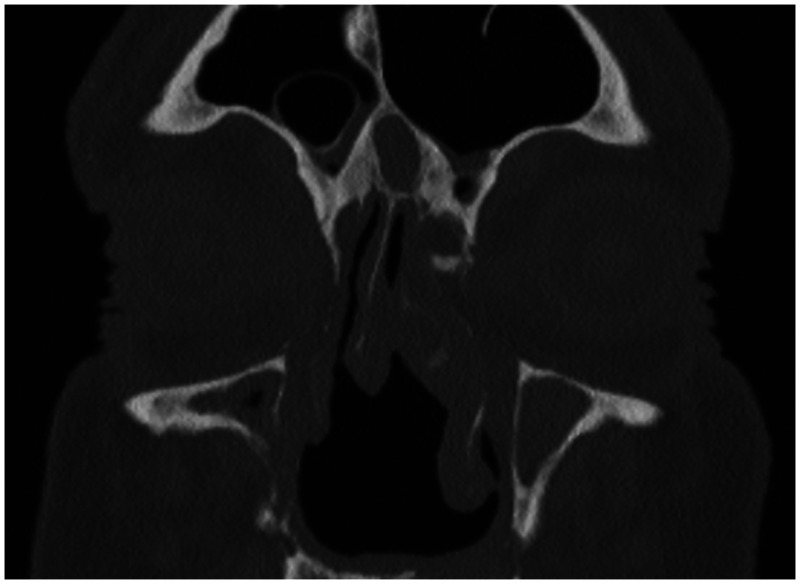

1496 — Tắc lệ đạo mắc phải sau chấn thương mặt và sau mổ xoang / Acquired nasolacrimal duct obstruction after midface trauma and sinonasal surgery
Tags: pattern:tac-le-dao pattern:hep-ong pattern:di-lech pattern:khuyet-xuong vung:mat vung:hoc-mat vung:mui protocol:CT-xoang-lat-mong protocol:CT-DCG incidentaloma:khong
Mức chắc chắn (certainty): tổng hợp y văn (literature synthesis) — ghép 322 phim CT xương mặt của chấn thương giữa mặt (Cureus 2024, PMC11372502, CC BY 4.0), 16 bệnh nhân/18 mắt tắc lệ đạo do chấn thương được mổ DCR nội soi có CT-DCG-MPR (Clin Ophthalmol 2025, PMC12184688, CC BY-NC 4.0), 79 ca tắc lệ đạo thứ phát trong 236 ca DCR (Am J Rhinol Allergy 2026, PMC12831806, CC BY-NC 4.0), loạt 65 + 65 ca sau mổ mũi (osteotomy) (Medicina 2025, PMC12654125, CC BY 4.0), 54 ca CT-DCG định lượng (Quant Imaging Med Surg 2025, PMC12290749, CC BY-NC-ND 4.0), loạt 2 ca túi lệ di lệch mổ theo đường ngách mũi dưới dưới hướng dẫn 3D CT-DCG (BMC Ophthalmol 2026, PMC13643978, CC BY-NC-ND 4.0) và tổng quan hệ thống 21 nghiên cứu/7.998 người về biến chứng mắt sau chấn thương hàm mặt (Maxillofac Plast Reconstr Surg 2026, PMC13106098, CC BY 4.0). Không có thử nghiệm ngẫu nhiên nào về thời điểm mổ sau chấn thương — phần đó ghi rõ "chưa rõ". Ca trong quiz là ca nguyên văn của nguồn, giữ đúng mô tả gốc.
Câu chốt: sau một cú đập vào giữa mặt hoặc một cuộc mổ xoang, chảy nước mắt một bên không phải "chảy nước mắt do viêm" mà là tắc lệ đạo mắc phải (secondary NLDO): ống lệ đạo bị gãy, bị đẩy lệch hoặc mất mốc giải phẫu. Ba câu hỏi quyết định: tắc ở tầng nào (lệ quản – túi lệ – ống lệ đạo), túi lệ còn đúng chỗ hay đã di lệch, và xương đã vững chưa. Trả sai tầng thì mổ DCR vẫn chảy nước mắt; bỏ sót di lệch thì mổ DCR "đúng kỹ thuật" mà không tìm thấy túi lệ.
1. Tổng quan bệnh học – cơ chế hình ảnh
- Giải phẫu là nguyên nhân. Ống lệ đạo chạy trong ống lệ đạo xương (bony nasolacrimal canal), tạo bởi mỏm trán xương hàm trên, xương lệ và liên quan ngách mũi dưới. Vì vậy mọi đường gãy đi qua mỏm trán xương hàm trên hay khối mũi–ổ mắt–sàng (NOE) đều có thể làm hẹp, gấp hoặc đứt ống này; còn mọi cuộc mổ bóc cuốn mũi giữa/xoang hàm đều có thể lấy mất mốc giải phẫu của túi lệ.
- Tần suất tổn thương XƯƠNG rất cao, tần suất TRIỆU CHỨNG rất thấp — đây là cặp số quan trọng nhất của bài. Trong 322 phim CT xương mặt của chấn thương giữa mặt, 37,6% (121/322) có bằng chứng tổn thương bộ máy lệ đạo trên phim: gãy đường thẳng ống lệ đạo 32,0% (103/322), bong hố lệ 2,5% (8/322), thông hố lệ–ống 2,8% (9/322); nhiều nhất ở gãy phức hợp gò má–hàm trên (ZMC) 70,8% (228/322) (Cureus 2024, PMC11372502). Ngược lại, trong tổng quan 3.693 người có biến chứng mắt sau chấn thương hàm mặt, tổn thương bộ máy lệ đạo chỉ được ghi nhận 14 ca (0,4%) (Maxillofac Plast Reconstr Surg 2026, PMC13106098). Khoảng cách 37,6% vs 0,4% là lý do không được mổ vì một dòng chữ trên phim, và cũng là lý do không được bỏ qua khi bệnh nhân phàn nàn chảy nước mắt.
- Vì sao tắc thường ở chỗ nối túi lệ – ống lệ đạo. Đây là nơi ống xương hẹp nhất và là nơi đường gãy mỏm trán xương hàm trên cắt ngang. Trong loạt 18 mắt tắc lệ đạo do chấn thương, vị trí tắc/gãy thường gặp nhất chính là chỗ nối túi lệ – ống lệ đạo; mổ ra thấy túi lệ di lệch 66,7% (12/18 mắt), rách túi lệ 22,2% (4/18), đứt dây chằng góc mắt trong 18,8% (3/16 người), lệch vách mũi 50,0% (9/18) (Clin Ophthalmol 2025, PMC12184688).
- TẠI SAO hình ảnh trông như vậy (vật lý). Xương đặc chặn tia X, nên trên cửa sổ xương ống lệ đạo hiện thành đường hầm sáng viền xương trắng; khi gãy, bờ ống mất liên tục, khẩu kính hẹp lại và bờ bị đẩy vào lòng. Cái mà CT cửa sổ xương không thấy là lòng ống có thông hay không — mô mềm, niêm mạc, máu cục đều cùng đậm độ mỡ/mô mềm và không phân biệt được. Vì vậy phải có CT-DCG (CT dacryocystography): bơm thuốc cản quang vào lệ quản, cột thuốc dừng ở đâu thì tắc ở đó; thuốc có iod nên đậm độ cao gần xương, thấy rõ cả khi ống chỉ còn vài mm.
- Số đo định lượng để không đọc cảm tính. Trong 322 phim trên, khi bộ máy lệ đạo có tổn thương, mức lún đo được ở mặt cắt trục trung vị 2,60 mm (IQR 1,30–3,10) so với 0,00 mm (0,00–0,00) ở nhóm không tổn thương (p < 0,0001); ở mặt cắt tránh trung vị 7,00 mm (6,00–8,00); gãy NOE có mức lún tránh lớn nhất, trung vị 9,00 mm (8,00–10,00) (Cureus 2024). Nói cách khác: một ống lệ đạo bị bóp hẹp ≥ 1,3 mm trên trục / ≥ 6 mm trên tránh là bất thường, không phải biến thể.
- Kích thước túi lệ bình thường để so sánh. Trên CT-DCG ở nhóm tắc lệ đạo mắc phải nguyên phát (PANDO), túi lệ đo được cao 13,74 ± 1,66 mm, đường kính ngang tối đa 3,89 ± 1,08 mm, trước–sau 5,39 ± 1,69 mm, và thuốc lấp gần đầy túi 80,14 ± 15,46% (Quant Imaging Med Surg 2025, PMC12290749). Túi lệ phình to > 8 mm ngang là dấu hiệu của nang túi lệ chứ không phải tắc đơn thuần (nhóm nang: 8,81 ± 2,40 mm, p < 0,01).
- TẠI SAO chấn thương lại khác tắc nguyên phát. PANDO là quá trình xơ hóa mạn, hai bên theo thời gian, nữ nhiều; tắc sau chấn thương là một bên, có nguyên nhân rõ, kèm di lệch giải phẫu. Điều này đổi cả đường mổ (phải tìm túi lệ đang nằm lệch, không dựa vào cuốn mũi giữa) và tiên lượng (mô đã chấn thương, có thể có sẹo xương).
- TẠI SAO sau mổ xoang cũng tắc. Cuốn mũi giữa là mốc để định vị túi lệ khi mổ nội soi; sau cắt cuốn giữa, cắt xoang hàm bán phần, cắt sàng (đặc biệt trong u xoang, xạ trị, mổ lại), mốc này mất và đoạn xa ống lệ đạo có thể bị cắt vào. Trong loạt 236 ca DCR, 33,5% (79/236) là tắc lệ đạo thứ phát do bệnh xoang: ung thư xoang/mặt 46,8%, bệnh viêm mạn 24,1%, chấn thương 16,5%, xạ trị vùng 31,6% (các nhóm chồng lấp) (Am J Rhinol Allergy 2026, PMC12831806).
- TẠI SAO phải chờ trước khi gọi là "tắc". Sau mổ mũi, phù nề làm nghẹt lệ đạo tạm thời rồi tự hết: ở 130 bệnh nhân mổ mũi, chảy nước mắt tuần 1 là 46,1% (osteotomy kinh điển) và 32,3% (osteotomy bằng Piezo); đến tháng 1 còn 24,6% vs 13,8%, tháng 3 còn 7,7% vs 4,6%, tháng 6 còn 15,1% vs 4,6% (p = 0,031); tắc khi bơm rửa ở tuần 1 là 21,5% vs 7,6% nhưng hội tụ về 12,3% vs 15,4% ở tháng 1 (Medicina 2025, PMC12654125). Kết luận thực hành: đánh giá lại sau khi hết phù, không mổ trong vài tuần đầu vì "chảy nước mắt sau mổ".
- Mốc thời gian trong ca chấn thương thật. Ca nguyên văn 33 tuổi bị đập vùng ổ mắt phải, gãy thành ổ mắt ngoài + mỏm trán xương hàm trên, viêm túi lệ mạn tiến triển trong 1 năm rồi mới được chẩn đoán; CT-DCG-MPR thấy túi lệ chứa thuốc bị đẩy ra ngoài và đường gãy ống lệ đạo thấy được trên cả 3 mặt phẳng; mổ ra xác nhận di lệch 8 mm (Clin Ophthalmol 2025).
2. Mẫu hình + chẩn đoán phân biệt theo vị trí (Gamut)
- Mẫu hình lâm sàng: chảy nước mắt một bên, khởi phát sau chấn thương giữa mặt / sau mổ xoang / sau xạ trị, kèm chảy mủ, đỏ góc mắt trong, ấn túi lệ có mủ. Không đau, không phù nề lan tỏa thì thường là tắc đơn thuần; đau + phù + sốt là viêm túi lệ cấp (bài 1485) và phải xử lý nhiễm trước.
- Ba trục đọc hình ảnh:
- Tầng tắc: lệ quản/điểm lệ (proximal) → túi lệ → ống lệ đạo → van Hasner/ngách mũi dưới. Tầng quyết định mổ: tầng ống lệ đạo = DCR; tầng lệ quản = DCR không giải quyết, cần tạo hình lệ quản/ống silicon hoặc nối lệ quản–túi lệ.
- Cơ chế: chèn ép xương (gãy lún, di lệch) · rách/đứt (mô mềm, dây chằng góc mắt trong) · sẹo xơ (sau xạ, sau mổ lại) · mất mốc giải phẫu (sau cắt cuốn giữa/ medial maxillectomy).
- Tính chất: một bên + có nguyên nhân (thứ phát) vs hai bên + tiến triển (PANDO) vs tạm thời do phù (sau mổ mũi, tự hết trong 1–3 tháng).
- Gamut theo vị trí:
- Đường gãy NOE / mỏm trán xương hàm trên: tắc lệ đạo do chấn thương · rách túi lệ · đứt dây chằng góc mắt trong (telecanthus) · giả phình/động mạch sàng trước (chảy máu) · rò dịch não tủy.
- Sau mổ xoang / medial maxillectomy: tắc lệ đạo thứ phát · hẹp lỗ thông DCR cũ · hội chứng mũi rỗng (empty nose) · hẹp van mũi · dính mũi (synechiae) · tái phát u.
- Sau xạ trị vùng mũi–hốc mắt: hẹp lệ đạo do xạ · hoại tử xương (ORN) · hẹp ống lệ đạo + khô mắt · tái phát u.
- Không liên quan chấn thương: PANDO · viêm túi lệ ứ đọng (ADR) · sỏi lệ đạo (dacryolith) · nang túi lệ · u túi lệ/lymphoma · viêm xoang sàng · bệnh IgG4.
- Trẻ em: tắc lệ đạo bẩm sinh/nang túi lệ (bài 1483) — khung bệnh hoàn toàn khác, không có chấn thương.
- Dấu hiệu báo động (red flags): chảy mủ + đau + sốt (viêm túi lệ cấp/áp-xe) · lồi mắt, hạn chế vận nhãn, giảm thị lực (lan hốc mắt) · telecanthus mới (đứt dây chằng góc mắt trong) · chảy dịch trong, một bên (rò dịch não tủy) · khối cứng, phá xương (u).

Nam 33 tuổi, chấn thương đụng dập ổ mắt phải, viêm túi lệ mạn 1 năm. (A) Trục: túi lệ chứa cản quang bị đẩy ra ngoài (mũi tên đỏ). (B) Tránh: gãy mỏm trán xương hàm trên, di lệch 8 mm (mũi tên trắng), lệch vách mũi 15°. (C) Đứng dọc: đường gãy ống lệ đạo (mũi tên đỏ). Lát cắt 1 mm, thuốc cản quang iopromide. Nguồn: Clin Ophthalmol 2025, PMC12184688, Fig. 1, CC BY-NC 4.0 (nguyên bản).3. Bảng so sánh phân biệt (ma trận đối chiếu)
| Thực thể (entity) | Hình ảnh điển hình (CT / CT-DCG / MRI) | Chốt vào (rule-in) | Chốt loại (rule-out) | Gợi ý xác nhận |
|---|---|---|---|---|
| Tắc lệ đạo sau chấn thương (traumatic NLDO) | Gãy mỏm trán xương hàm trên/NOE, ống lệ đạo xương hẹp hoặc gián đoạn; túi lệ chứa thuốc bị đẩy lệch; cột thuốc dừng ở chỗ nối túi–ống | Một bên + tiền sử chấn thương + cột thuốc dừng đúng chỗ gãy + túi lệ lệch (tương quan với mổ 94,7%) | Túi lệ đúng vị trí, ống lệ đạo thông suốt trên CT-DCG, không có đường gãy | CT-DCG-MPR (không phải CT thường); độ nhạy phát hiện di lệch túi lệ 100% vs 58,3% so với CT thường |
| Tắc lệ đạo thứ phát sau mổ xoang / medial maxillectomy | Mất cuốn giữa, mất mốc thành mũi bên, có thể thiếu đoạn xa ống lệ đạo; dính mũi; xoang đã mổ rộng | Tiền sử mổ xoang + mất mốc giải phẫu + tắc một bên | Còn đủ cuốn giữa và thành mũi bên, ống lệ đạo liên tục → nghĩ nguyên nhân khác | CT xoang ≤ 1 mm; nội soi mũi trước mổ; phối hợp TMH–mắt |
| PANDO (tắc mắc phải nguyên phát) | Túi lệ không di lệch, ống lệ đạo hẹp/xơ từ đoạn xa; túi cao 13,74 ± 1,66 mm, ngang 3,89 ± 1,08 mm, thuốc lấp 80,14 ± 15,46% | Nữ trung niên, hai bên, tiến triển, không chấn thương, không mất mốc | Có gãy xương/di lệch túi lệ hoặc mất mốc sau mổ → thứ phát | CT-DCG; đối chiếu triệu chứng; thử thông/rửa lệ đạo |
| Hẹp hoặc đứt lệ quản (canalicular stenosis/laceration) | Tắc trước túi lệ: thuốc không vào được túi, túi lệ không căng; có thể thấy đầu lệ quản co kéo | Chảy nước mắt + bơm rửa trào ngược ngay ở điểm lệ + tiền sử rách mi/góc mắt | Cột thuốc vào tới túi lệ rồi mới dừng → tắc ở túi/ống, không phải lệ quản | Thăm dò + rửa lệ đạo; DCR đơn thuần thất bại nếu bỏ tầng này |
| Tắc lệ đạo do xạ trị | Hẹp dài, đều ống lệ đạo, không đường gãy; niêm mạc mũi teo, dính; có thể kèm khô mắt | Tiền sử xạ vùng mũi–hốc mắt + hẹp dài + khô mắt | Không tiền sử xạ, hẹp khu trú đúng chỗ gãy → chấn thương | CT/MRI; đánh giá phim xạ; tiên lượng kém: thành công 68,0% |
| Viêm túi lệ cấp / áp-xe túi lệ (bài 1485) | Túi lệ căng dịch, thành dày ngấm thuốc, mỡ quanh viêm, có thể ổ dịch viền ngấm thuốc; không có ngưỡng HU phân biệt dịch/mủ | Đau, đỏ, sưng dưới dây chằng + ấn có mủ ở điểm lệ | Không đau, không phù nề, chỉ chảy nước mắt → tắc đơn thuần | Siêu âm ≥ 12 MHz; chọc/dẫn lưu nếu dao động |
| Viêm túi lệ ứ đọng (ADR) | Túi lệ căng dịch không có tắc thật; hết sau điều trị nội, rửa lệ đạo thông lại sau ~1 tháng | Không tiền sử chảy nước mắt + hết triệu chứng + thông lại khi thử | Vẫn tắc khi thử lại sau khi hết viêm → tắc thật | Rửa/thông lệ đạo sau khi hết viêm |
| U túi lệ / lymphoma | Khối đặc ngấm thuốc, lan trên dây chằng góc mắt trong, có thể phá xương; không đối xứng | Khối đặc + phá xương + lan trên dây chằng | Ổ dịch thuần, không phần đặc → không phải u | MRI có cản quang + sinh thiết; không DCR đơn thuần |

Trái: mặt cắt trục — bờ ống lệ đạo xương bị lún, đo bằng thước trên phần mềm DICOM. Phải: mặt cắt tránh — đoạn xương lệ đạo bị gián đoạn đo được 1,01 cm. Cùng bệnh nhân gãy trán–mũi–ổ mắt–sàng. Nguồn: Cureus 2024, PMC11372502, Fig. 3 và Fig. 4, CC BY 4.0 (ghép letterbox, nguyên tỷ lệ).Đọc ma trận theo thứ tự nào
- Bước 1 — xác định tầng tắc bằng cột thuốc, không bằng cảm giác. Thuốc dừng trước túi lệ = lệ quản; trong túi lệ = túi; dưới túi lệ = ống lệ đạo. Mổ DCR chỉ chữa được hai tầng sau.
- Bước 2 — túi lệ có đúng chỗ không. So vị trí túi lệ với cuốn mũi giữa và thành mũi bên; lệch ra ngoài/ra trước là dấu hiệu chấn thương, và là lý do phải đổi đường mổ.
- Bước 3 — xương đã vững chưa. Đường gãy còn di động, còn mảnh rời hoặc chưa cố định = mổ DCR dễ thất bại; cần phối hợp phẫu thuật hàm mặt cố định trước.
- Bước 4 — loại trừ u và nhiễm. Khối đặc, phá xương, lan trên dây chằng = MRI + sinh thiết, không "thử DCR". Đau + mủ = điều trị nhiễm trước (bài 1485).
4. Protocol chụp + hệ phân độ/ngưỡng xử trí
- CT xương mặt là phim đầu tiên, nhưng phải đọc cả 3 mặt phẳng. Lát ≤ 1 mm, cửa sổ xương + mô mềm, dựng trục – tránh – đứng dọc; đo khẩu kính ống lệ đạo xương và mức lún ở cả trục và tránh (ngưỡng bất thường từ loạt 322 phim: ≥ 1,3 mm trục / ≥ 6 mm tránh); ghi vị trí gãy so với chỗ nối túi lệ–ống lệ đạo, vị trí chèn của dây chằng góc mắt trong, và mức lệch vách mũi. Đây là phim sàng lọc, không phải phim quyết định mổ.
- CT-DCG-MPR là phim quyết định khi đã có triệu chứng. Bơm thuốc cản quang có iod qua lệ quản, chụp lát 1 mm, dựng đa mặt phẳng. So với CT thường, CT-DCG-MPR có độ đặc hiệu xác định tầng tắc 92,3% vs 69,2% (p = 0,032), độ nhạy phát hiện di lệch túi lệ 100% vs 58,3% (p = 0,002), giá trị tiên đoán dương 94,7% vs 63,2% (p = 0,002) và tương quan với thực tế mổ 94,7%; riêng đánh giá mức lan đường gãy thì hai cách tương đương (94,1% vs 82,4%, p = 0,125) (Clin Ophthalmol 2025).
- Khi nào thêm MRI: nghi u túi lệ/lymphoma, nghi lan hốc mắt/nội sọ, cần đánh giá thị thần kinh, hoặc trẻ cần tránh bức xạ. Tối thiểu T1 không mỡ + T2 fat-sat + T1 fat-sat sau tiêm, lớp ≤ 3 mm.
- Nội soi mũi là một phần của protocol, không phải bước phụ: nó xác nhận mốc cuốn mũi giữa còn hay mất, đoạn xa ống lệ đạo còn hay đã bị cắt, và tìm dính mũi/hẹp van — những thứ quyết định đường vào mổ.
- Siêu âm B-scan/đầu dò ≥ 12 MHz dùng khi cần phân biệt nang/nang nhầy với túi lệ đặc, hoặc khi không chụp được CT; không thay thế CT-DCG để xác định tầng tắc.
Ngưỡng xử trí (theo bậc):
| Bậc | Bối cảnh | Việc làm | Bằng chứng / số liệu |
|---|---|---|---|
| 1 | Mới chảy nước mắt sau mổ mũi/xoang < 3 tháng, không mủ, không đau | Theo dõi + rửa lệ đạo + FDDT; không mổ | Chảy nước mắt 46,1% ở tuần 1 → 24,6% tháng 1 → 7,7% tháng 3; tắc khi bơm rửa hội tụ về 12,3% vs 15,4% ở tháng 1 (phù nề là cơ chế chính) |
| 2 | Tắc thật ở ống lệ đạo, xương đã vững, không di lệch túi lệ | DCR nội soi ± ống silicon | DCR nội soi ở tắc do chấn thương: thành công giải phẫu 94,4% (17/18), chức năng 88,9% (16/18), theo dõi 55,4 ± 10,9 tháng |
| 3 | Túi lệ di lệch / mất mốc cuốn mũi giữa | DCR đường ngách mũi dưới, truy ngược ống lệ đạo xa lên túi lệ dưới hướng dẫn 3D CT-DCG | 2/2 ca thông ngay lần đầu, không rò dịch não tủy/tổn thương hốc mắt; theo dõi 6 tháng không tái tắc |
| 4 | Có hẹp/đứt lệ quản kèm theo | Đặt ống silicon hoặc tạo hình lệ quản; không chỉ DCR | Trong 18 mắt chấn thương, 2 mắt (11,1%) có hẹp lệ quản phải đặt ống silicon; tắc lệ đạo thứ phát có 29,0% kèm bệnh lệ quản (vs 8,3% ở PANDO, p < 0,01) |
| 5 | Sau xạ trị hoặc sau mổ lại | Tư vấn tiên lượng thấp hơn, cân nhắc DCR + ống silicon lâu hơn, phối hợp TMH–mắt | Thành công chức năng: toàn bộ tắc thứ phát 79,7% vs PANDO 87,9%; xạ trị 68,0%; u xoang 70,3%; mổ lại 66,7%; chấn thương 84,6% (11/13) |
| 6 | Đau + mủ + phù nề | Điều trị viêm túi lệ cấp/áp-xe trước (dẫn lưu nếu dao động), DCR sau khi hết viêm | Xem bài 1485; DCR sớm ≤ 3 ngày đạt 87,8%/82,9% nhưng chỉ khi đã kiểm soát nhiễm |

Túi lệ di lệch sau chấn thương. (a) Trục, (b) đứng dọc, (c) tránh: vùng tăng đậm độ trong khung đỏ là túi lệ đã bơm cản quang; (d) dựng 3D cho thấy quỹ đạo di lệch của túi lệ, dùng để chọn đường vào ngách mũi dưới và truy ngược ống lệ đạo xa. Mũi tên đỏ: cuốn mũi dưới. Nguồn: BMC Ophthalmol 2026, PMC13643978, Fig. 3, CC BY-NC-ND 4.0 (nguyên bản, không cắt/ghép).flowchart TD
A[Chảy nước mắt một bên sau chấn thương hoặc sau mổ xoang] --> B{Có đau, mủ, phù nề}
B -->|Có| C[Điều trị viêm túi lệ cấp trước]
B -->|Không| D{Mới sau mổ dưới 3 tháng}
D -->|Có| E[Theo dõi, rửa lệ đạo, FDDT, đánh giá lại]
D -->|Không| F[CT xương mặt 1 mm, dựng 3 mặt phẳng]
F --> G{CT thấy gãy hoặc hẹp ống lệ đạo xương}
G -->|Không| H[CT-DCG để tìm tầng tắc]
G -->|Có| I[CT-DCG-MPR để xác định tầng tắc và vị trí túi lệ]
H --> I
I --> J{Cột thuốc dừng ở đâu}
J -->|Trước túi lệ| K[Tắc lệ quản: ống silicon hoặc tạo hình lệ quản]
J -->|Túi lệ hoặc ống lệ đạo| L{Túi lệ di lệch hoặc mất mốc cuốn giữa}
L -->|Không| M[DCR nội soi ± ống silicon]
L -->|Có| N[DCR đường ngách mũi dưới, truy ngược ống lệ đạo xa]
M --> O[Kiểm tra thông rửa và nội soi sau 1 và 6 tháng]
N --> O
K --> O
- Theo dõi sau mổ: kiểm tra thông rửa + nội soi ở 1 tháng và 6 tháng; trong loạt 18 mắt, dính mũi 16,7% (3/18) và mô hạt 11,1% (2/18), đều xử lý khỏi; lỗ thông đạt 3,5 mm đường kính sau 12 tháng ở ca nguyên văn. Chảy nước mắt tái phát + tắc khi rửa = hẹp lỗ thông, không phải "tắc mới".
- Thời điểm mổ sau chấn thương: chưa rõ — cần tra. Không có thử nghiệm ngẫu nhiên so sánh mổ sớm với mổ muộn; dữ liệu hiện có chỉ cho thấy phù nề tự giảm trong 1–3 tháng và ca chấn thương thật được chẩn đoán muộn 1 năm. Cách làm hợp lý: chờ xương vững + hết phù, xác nhận tắc bằng CT-DCG rồi mới mổ, không dựa vào một mốc ngày cố định.
5. Biến thể bình thường và cạm bẫy
- Gãy xương ống lệ đạo KHÔNG đồng nghĩa tắc. 37,6% phim chấn thương giữa mặt có tổn thương xương, nhưng biến chứng lệ đạo được ghi nhận chỉ 0,4%. Mổ dựa trên phim mà bệnh nhân không chảy nước mắt là can thiệp oan.
- Chảy nước mắt sau mổ mũi thường là phù nề, không phải tắc. 46,1% ở tuần 1 giảm còn 7,7% ở tháng 3 (nhóm osteotomy kinh điển). Gọi là "tắc lệ đạo" và đặt ống silicon ngay trong tháng đầu là can thiệp thừa.
- Bỏ sót tầng lệ quản. Nếu tắc ở lệ quản, DCR mở một cửa thông từ túi lệ ra mũi nhưng nước mắt vẫn không tới được túi lệ: bệnh nhân vẫn chảy nước mắt dù lỗ thông rộng. Luôn đánh giá điểm lệ – lệ quản trước khi hẹn mổ.
- Mốc cuốn mũi giữa mất sau mổ xoang. Ở bệnh nhân đã cắt cuốn giữa, cắt xoang hàm bán phần, medial maxillectomy, dò túi lệ theo cuốn giữa là dò mù; hình ảnh CT cho thấy mất thành mũi bên và mất đoạn xa ống lệ đạo. Đường vào phải dựa trên 3D CT-DCG, không dựa vào mốc giải phẫu đã mất.
- Cạm bẫy "xương lành = hết tắc". Đường gãy liền xương vẫn để lại hẹp lòng ống và sẹo xơ; bệnh nhân đến khám nhiều tháng–nhiều năm sau chấn thương với viêm túi lệ mạn. Hỏi tiền sử chấn thương là bước rẻ nhất.
- Telecanthus mới sau chấn thương NOE = đứt dây chằng góc mắt trong (18,8%), không chỉ là "sẹo xấu": cần cố định dây chằng, và nếu bỏ qua thì DCR dễ thất bại vì túi lệ bị kéo lệch.
- Không nong/thông mạnh trong chấn thương cấp. Niêm mạc đang rách và xương còn di động; thao tác mạnh tạo đường giả và làm sẹo hẹp nặng hơn.
- Sau xạ trị, đừng hứa kết quả như PANDO. Thành công 68,0% và mô xơ hóa kém lành; cần tư vấn trước mổ và theo dõi lâu hơn (thời gian lưu ống trung bình ở nhóm thứ phát 124,67 ngày vs 81,90 ngày ở PANDO).
- Sỏi lệ đạo có thể bị bỏ sót nếu chỉ đọc CT thường. Trong 18 ca sỏi lệ đạo, chỉ 27,8% (5/18) thấy được trên CT không bơm thuốc; CT-DCG thấy khuyết thuốc bề mặt 82,4% và vôi hóa ngoại vi 64,7%. Chảy nước mắt tái phát sau DCR ở người trẻ phải nghĩ sỏi.
6. Tự lượng giá — Blind Quiz
Ca 1 — Nam 33 tuổi, chấn thương đụng dập ổ mắt phải 1 năm trước, nay chảy nước mắt + chảy mủ góc mắt trong, ấn túi lệ có mủ. CT-DCG-MPR: túi lệ chứa thuốc bị đẩy ra ngoài, đường gãy ống lệ đạo thấy trên cả 3 mặt phẳng, gãy mỏm trán xương hàm trên di lệch 8 mm. Hỏi chẩn đoán, tầng tắc, và kế hoạch mổ?
- Gợi ý: không lồi mắt, không hạn chế vận nhãn, thị lực bình thường.
- Câu hỏi: Túi lệ có đúng vị trí không? Vì sao CT thường không đủ? Mổ đường nào và tiên lượng bao nhiêu?
Bấm để hiện đáp án (findings + chẩn đoán)
- Findings: (A) túi lệ ngấm cản quang, di lệch ra ngoài; (B) gãy mỏm trán xương hàm trên, di lệch 8 mm, lệch vách mũi 15°; (C) đường gãy ống lệ đạo ở mặt phẳng đứng dọc.
- Chẩn đoán: tắc lệ đạo do chấn thương, tầng chỗ nối túi lệ–ống lệ đạo, kèm di lệch túi lệ — biến chứng của gãy NOE/mỏm trán xương hàm trên.
- Vì sao cần CT-DCG: CT thường chỉ thấy xương; CT-DCG-MPR có độ nhạy phát hiện di lệch túi lệ 100% vs 58,3% và tương quan với mổ 94,7%.
- Xử trí: DCR nội soi (trong loạt này 94,4% giải phẫu / 88,9% chức năng); nếu túi lệ lệch nhiều hoặc mất mốc cuốn giữa → đường ngách mũi dưới truy ngược ống lệ đạo xa.
- Nguồn ảnh: Clin Ophthalmol 2025, PMC12184688, Fig. 1, CC BY-NC 4.0.
Ca 2 — Nam 41 tuổi, gãy trán–mũi–ổ mắt–sàng sau tai nạn giao thông, chưa chảy nước mắt. CT xương mặt: ống lệ đạo xương bờ mất liên tục. Hỏi có phải mổ lệ đạo không, và đo gì để mô tả tổn thương?
- Gợi ý: bệnh nhân được mổ cố định xương, không phàn nàn chảy nước mắt.
- Câu hỏi: Dấu hiệu trên phim là gì? Vì sao không mổ? Ngưỡng đo nào gọi là bất thường?
Bấm để hiện đáp án (findings + chẩn đoán)
- Findings: trục — bờ ống lệ đạo xương bị lún, đo bằng thước DICOM; tránh — đoạn xương lệ đạo gián đoạn đo được 1,01 cm.
- Chẩn đoán: tổn thương bộ máy lệ đạo trên CT do chấn thương giữa mặt — có thể chỉ là tổn thương hình ảnh, chưa tắc.
- Vì sao không mổ: 37,6% phim chấn thương giữa mặt có tổn thương xương, nhưng biến chứng lệ đạo có triệu chứng chỉ 0,4%. Mổ khi không có triệu chứng là can thiệp oan.
- Ngưỡng đo: khi có tổn thương, mức lún trung vị 2,60 mm trên trục (so với 0,00 mm ở nhóm không tổn thương) và 7,00 mm trên tránh; gãy NOE lún tránh tới 9,00 mm.
- Theo dõi: hẹn đánh giá lại sau khi xương vững, hỏi triệu chứng chảy nước mắt, làm FDDT; chỉ chụp CT-DCG khi có triệu chứng.
- Nguồn ảnh: Cureus 2024, PMC11372502, Fig. 3 + Fig. 4, CC BY 4.0.
Ca 3 — Nữ 58 tuổi, đã mổ u xoang hàm trên phải + xạ trị 2 năm trước, nay chảy nước mắt phải liên tục, chảy mủ khi ấn. CT tránh: mất cuốn mũi giữa phải, mất thành mũi bên, dính mũi; không thấy đường gãy mới. Hỏi chẩn đoán, vì sao tiên lượng khác PANDO, và cần gì trước mổ?

- Gợi ý: không chấn thương; đã phẫu thuật nội soi mũi xoang + xạ.
- Câu hỏi: Mốc giải phẫu nào mất? Tầng tắc dự đoán? Tỉ lệ thành công và cách chuẩn bị?
Bấm để hiện đáp án (findings + chẩn đoán)
- Findings: mất cuốn mũi giữa và mất mốc thành mũi bên phải, dính mũi, xoang đã mổ rộng, không có đường gãy mới.
- Chẩn đoán: tắc lệ đạo thứ phát sau mổ xoang + xạ trị (nhóm chiếm 33,5% các ca DCR ở trung tâm tuyến cuối; xạ trị 31,6%, u xoang 46,8%).
- Vì sao khác PANDO: mô đã xạ xơ hóa, mốc giải phẫu mất, thường kèm bệnh lệ quản (29,0% vs 8,3%); thành công chức năng 79,7% toàn nhóm, 68,0% nếu có xạ, 66,7% nếu mổ lại — so với 87,9% ở PANDO.
- Chuẩn bị: nội soi mũi + CT-DCG/3D để định vị túi lệ, phối hợp TMH–mắt (70,9% ca thứ phát được mổ phối hợp), chuẩn bị ống silicon lưu lâu (trung bình 124,67 ngày).
- Nguồn ảnh: Am J Rhinol Allergy 2026, PMC12831806, Fig. 1, CC BY-NC 4.0.
Bài liên quan chéo
- 400 – Tổng quan Mắt & thị giác
- 410 – Giải phẫu học mắt
- 1483 – Nang túi lệ bẩm sinh & tắc lệ đạo ở trẻ
- 1485 – Viêm túi lệ cấp và áp-xe túi lệ
- 1461 – Áp-xe dưới màng xương hốc mắt ở trẻ
- 1473 – Viêm xoang nấm xâm lấn cấp hốc mắt
- 424 – Tuyến lệ: viêm vs u
Ảnh
1496_tac-le-dao_CT_Cureus2024-F3.jpg,1496_tac-le-dao_CT_Cureus2024-F4.jpg,composite_ong-le-dao-xuong-chan-thuong.jpg— Cureus 2024, PMC11372502, Fig. 3–4, CC BY 4.0.1496_tac-le-dao_CT-DCG_ClinOphthalmol2025-F1.jpg— Clin Ophthalmol 2025, PMC12184688, Fig. 1, CC BY-NC 4.0.1496_tac-le-dao_CT-DCG_BMCOphthalmol2026-F3.jpg— BMC Ophthalmol 2026, PMC13643978, Fig. 3, CC BY-NC-ND 4.0 (nguyên bản).1496_tac-le-dao_CT_AmJRhinolAllergy2026-F1.jpg— Am J Rhinol Allergy 2026, PMC12831806, Fig. 1, CC BY-NC 4.0.- Giấy phép và nguồn từng ảnh:
images/CREDITS.md; link gốc:sources.md.
Không dùng để chẩn đoán độc lập khi chưa có người hướng dẫn.